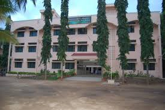

 School is the place where wisdom grows.Every students have millions of memories in their school.Like them,I too have so much memories to dig in my school. 12 years of school life is an unforgettable one.And i'm so blessed to study in my school. My school's environment is covered with green trees and plants which gives a pleasant vibe.Our teachers were so friendly and take care of us like their own children.My friends to who I have shared millions of memories,emotions and much more. Classrooms and schools play a emotional role in carrying all the student's emotion,feelings and memories.And I miss my school so much.